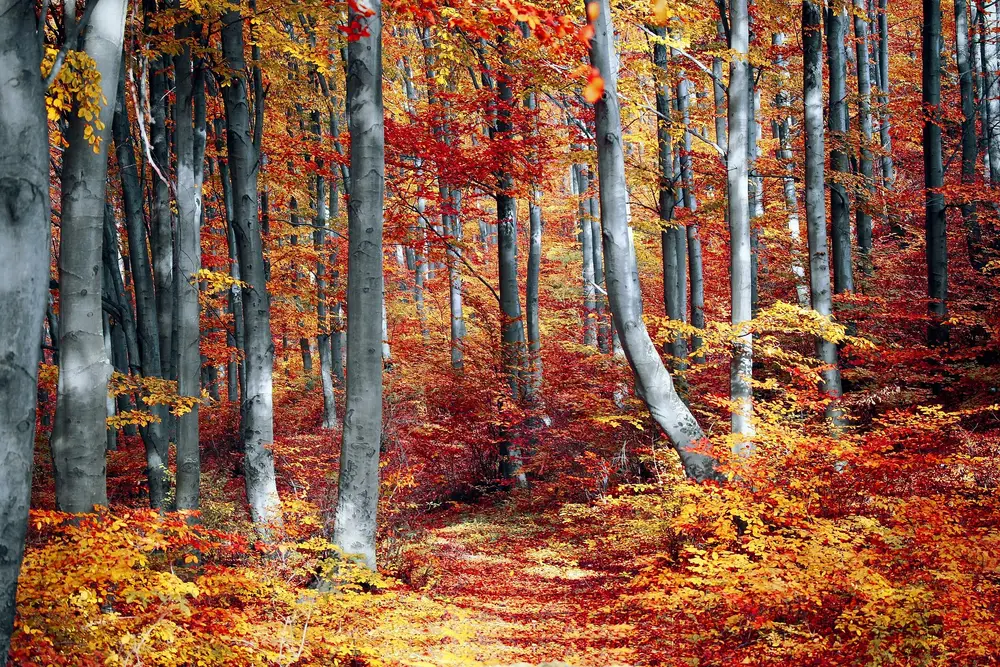

Edinburgh in autumn:
golden light, long nights, good stories.
A slow guide to autumn in Edinburgh: where the colour is, which festivals are worth planning around, and how to enjoy the shorter days.

Why visit Edinburgh in autumn?
Autumn in Edinburgh is about more than colourful leaves and peaceful walks. As summer ends, the city offers a mix of cultural events, traditional celebrations, historic buildings and seasonal entertainment, and it often feels calmer once the summer festival crowds have gone.
Autumn here covers September, October and November. The light turns softer, the parks change colour, and the old streets suit the season well. It is a good time for walking, for long lunches, and for the indoor attractions that make the most of a cooler day.
Autumn festivals and events do not fall on the same dates each year. Check each organiser's official website before you book accommodation or plan your days.
Where to see autumn colour
The timing of the colour depends on the weather, so treat these as good places to look, not a guarantee of peak leaves on a particular day.
Princes Street Gardens and The Meadows
Both are central, free to wander and easy to fit around other plans. Trees change colour through the season, and a short walk through either gives you autumn without a long journey.
Royal Botanic Garden Edinburgh
A garden with a large collection of trees and plants is a natural place to look for seasonal colour. Check the Garden's official website before you go for opening information, tickets and any areas that may be closed. [1]
Water of Leith Walkway and Dean Village
Following the river through the city, the walkway passes wooded stretches and quiet corners, and Dean Village is a pleasant place to end a walk. Wear shoes with good grip, because leaves and wet paths can be slippery.
Holyrood Park and Arthur's Seat
Clear autumn days give long views from the hill, and the cooler air makes the climb more comfortable. Daylight ends earlier in autumn, so start in good time and plan to be back down before dusk.
Things to do on cooler days
Walk the Old Town slowly
With fewer crowds than summer, the Royal Mile and its side closes are easier to enjoy. Take your time, and duck into a shop or café when the weather turns.
Choose a museum or a library
Indoor attractions come into their own when it rains. The National Museum of Scotland suits visitors interested in history, science and culture, and our culture and history guide covers libraries, museums and castles in more detail.
Eat something warming
Autumn suits the city's traditional dishes, from hearty soups to simple comfort food. For ideas on what to order, read our guide to eating slowly in Edinburgh.
Autumn festivals and events
As summer comes to an end, Edinburgh offers cultural events, traditional celebrations, historic experiences and seasonal entertainment. From exploring historic buildings to live music and Halloween celebrations, it is a good time to see another side of the city.
Doors Open Days
Doors Open Days lets visitors explore interesting buildings and historic places across Scotland. Some participating buildings are not usually open to the public, which makes it a good chance for architecture and history lovers. It also suits travellers who want to see Edinburgh beyond its most famous attractions. Dates and participating locations change each year, so check the official programme. [2]
Scottish International Storytelling Festival
Storytelling has a special place in Scottish culture, and this festival celebrates it with performances, conversations and creative events. It is based at the Scottish Storytelling Centre on the High Street, on the Royal Mile, and it takes place each autumn in late October. The 2026 edition ran from 21 to 31 October, with the theme Bird and Beast. You can hear traditional tales and contemporary stories, which makes it a good choice for anyone interested in Scottish heritage and literature. [3]
Samhuinn Fire Festival
Samhuinn is a seasonal celebration inspired by ancient Celtic traditions that mark the move from summer to winter. It brings together fire performances, music, dance, costumes and theatrical storytelling, and it is a distinctive way to meet Edinburgh's links with folklore. Check the organiser's website for dates, details and ticket information. [4]
Scots Fiddle Festival
Music lovers may enjoy the Scots Fiddle Festival, which celebrates Scotland's fiddle music and musical heritage. It brings musicians and performers together for concerts, workshops and other music activities, and it is a lively way to hear traditional Scottish music. [5]
Edinburgh Cocktail Week
For visitors interested in food and drink, Edinburgh Cocktail Week celebrates cocktail culture through participating venues, special drinks, food experiences and entertainment. It can be an interesting addition to an evening out. Check the website for participating venues, dates and current arrangements. [6]
Halloween in Edinburgh
Halloween is another exciting part of the season. The city's historic streets, old buildings and folklore make an atmospheric setting, and visitors may find themed walking tours, storytelling events, family activities and special experiences. If you plan an October visit, check the latest event listings for what is on during your stay. [7]
Christmas at the Botanics
As autumn moves towards winter, Edinburgh begins to welcome festive attractions and light displays. Christmas at the Botanics is a popular one, with illuminated installations and a festive trail through the Royal Botanic Garden. It takes place in the winter festive season rather than in autumn itself, but it is worth knowing about if you visit in late November or plan a longer seasonal holiday. Check the official website for dates, tickets and visitor information. [8]
Pick one event that suits you, and let the rest of the trip stay unplanned.
Weather and what to pack
Autumn weather in Edinburgh is changeable. Early autumn can still feel mild, while November is noticeably colder, with more rain, stronger wind and shorter days. In late October the clocks go back, so evenings get dark earlier. For conditions close to your trip dates, check the Met Office forecast. [9]
What to pack
- A waterproof jacket, and a hood or compact umbrella.
- Comfortable walking shoes with good grip for wet leaves and cobbles.
- Warm layers, such as sweaters or a fleece.
- A hat, scarf and gloves if you visit in November.
- A small day bag for water, snacks and an extra layer.
Daylight runs out sooner in autumn. Put the outdoor parts of your day first, and keep museums, cafés and events for the evening.
Is autumn a good time to visit Edinburgh?
It can be, especially if you enjoy walking in cooler air, cultural events and a calmer city. The advantages are clear:
- Parks, gardens and river walks change colour.
- The city often feels calmer once the summer festivals end.
- Storytelling, music, heritage and Halloween events fill the calendar.
- Cosy cafés, museums and libraries suit the weather.
The trade-offs are shorter days, more rain and colder weather as the season goes on. For the mildest conditions, consider September or early October. For the strongest seasonal events, look at late October.
A relaxed one-day autumn itinerary
Use this as a loose frame. Start earlier than you think, because the daylight ends sooner than the plan does.
Morning — Princes Street Gardens and the Old Town
Begin with a walk through the gardens while the light is good, then climb into the Old Town and along the Royal Mile.
Midday — A warming lunch and a museum
Have a bowl of something traditional, then spend the early afternoon at the National Museum of Scotland or another indoor attraction.
Afternoon — Gardens or the Water of Leith
If the weather allows, walk part of the Water of Leith towards Dean Village, or visit the Royal Botanic Garden. Aim to finish before dusk.
Evening — A story, a tune or a quiet dinner
When the dark comes in, look for an event that fits the season, such as a storytelling or music evening, or simply settle in for dinner in the Old Town.
Questions about autumn in Edinburgh
Which autumn month is best?
September and early October are usually the mildest, while late October has the strongest seasonal events. November is colder, but it suits museums, cafés and the first festive attractions.
Does it rain a lot in autumn?
Rain is possible all season, and it can change during the day. Carry waterproof clothing and keep indoor options in your plan.
Is Edinburgh busy in autumn?
It often feels calmer than in summer, but weekends, school holidays and event dates can still be busy. Book accommodation and popular events in advance.
Is Halloween worth planning a trip around?
If you enjoy folklore, storytelling and atmospheric streets, yes. Check event listings early, because popular tours and shows can fill up.
Is November too cold to visit?
November is cold and the days are short, but it suits indoor attractions, long lunches and the start of the festive season. Bring warm layers and waterproofs.
Do I need to book events in advance?
For ticketed events, yes, check the organiser's website. For free events and open buildings, check the programme and any booking rules for your dates.
Final thoughts
Autumn gives Edinburgh a softer pace. You can walk under changing trees in the afternoon, step into a museum or a café when the weather turns, and spend an evening at a storytelling event or a seasonal celebration.
With waterproofs, warm layers and an early start, it is a rewarding season for a slower trip.
Visiting in another season? Read our spring guide or our summer guide, or keep planning with our Edinburgh travel guide and the best places in Edinburgh.
Further reading
[1] Royal Botanic Garden Edinburgh — visitor information
[3] Scottish International Storytelling Festival
[4] Beltane Fire Society — Samhuinn Fire Festival
[7] Edinburgh.org — Halloween events in Edinburgh
[8] Royal Botanic Garden Edinburgh — what's on
[9] Met Office — weather forecasts
This article provides general travel inspiration. Event dates, opening times, ticket rules and access arrangements may change, so check official sources before you travel.